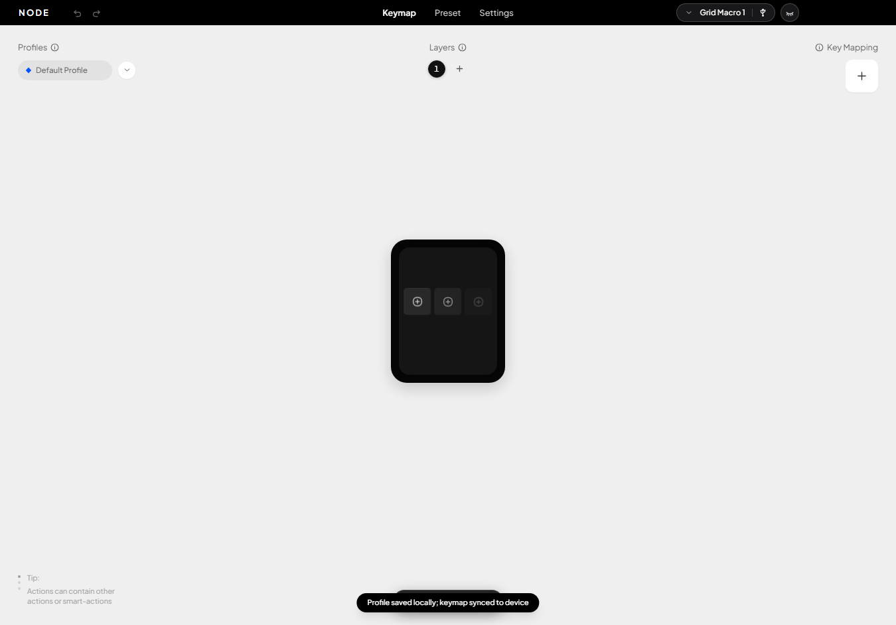

Map it your way
Assign shortcuts, actions, and icons to all nine keys with a clear, direct layout.
A keymap that feels like yoursGive your most-used shortcuts a home. Build keymaps, switch profiles, and tune your dial in one focused desktop studio.

Shape the pad around the way you work, then keep each setup a click away.
Assign shortcuts, actions, and icons to all nine keys with a clear, direct layout.
A keymap that feels like yoursKeep separate setups for editing, streaming, coding, or whatever comes next.
Change context in a tapSet clockwise, counter-clockwise, and press actions for quick control without reaching for the mouse.
Three actions. One dial.Follow the pinout guide, verify QMK/VIA protocols, and flash the RP2040-Zero controller with confidence.
Runs on the compact Raspberry Pi RP2040-Zero. Direct matrix keys GP0–GP8, rotary encoder on GP9 (A), GP10 (B), GP11 (Push), and WS2812 RGB data on GP16.
Communicates over standard 32-byte Raw HID packets (Usage Page 0xFF60, Usage 0x61). Registered under USB VID/PID 0xFEED:0x6001 with full VIA v13 protocol support.
Hold the BOOT button while plugging in USB to mount the RPI-RP2 drive. Drop in grid_macro_1_via.uf2 to flash. Builds include verifiable SHA-256 provenance.
Studio automatically captures a device snapshot before writes. If a cable disconnects mid-sync, local profiles stay safely preserved in storage without corrupted device memory.
Set up your Grid Macro 1 with the desktop studio. Start in simulation mode, then connect your pad when you’re ready.
Choose the assisted Windows installer or grab the portable ZIP.
Map your keys and encoder, or start from a workflow preset.
Connect your Grid Macro 1 over USB, or test your setup in simulation mode.